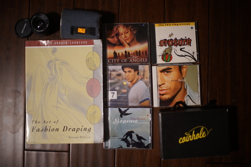
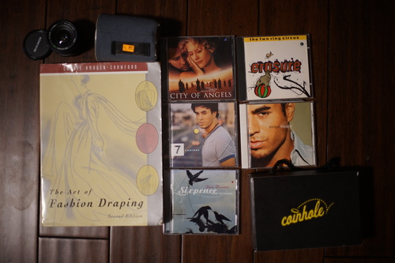

Ooops I made it a little long between blog posts. Haven't done much but draw, play with the local small demon, wander aimlessly.... Wait no I had like 3 non blog updates!!! I'm NOT SORRY!!!
I forgot I took Hina out to tour The Grounds on Hinamatsuri for photos!! I didn't forget her I just forgot to look at them.


Blessed Hina chuu~~
I'm not sure how I feel about the blue eye. I don't have access to the green one right now, but I think I want to go back to it. I think this blue plus green would be the best odd eye combo, but tea rose is the prettiest brown ever and I should have just kept her with both browns to start with.
 

I wasn't positive this was the right mount when I bought it, but I took a chance and it worked out. I cannot figure out how to stop down on this bad boy. Is it broken?? There's barely any info on this "brand" online.
I was actually hoping for drafting but draping is good too.
I don't actually know any of his music (I think) but boy do they know their audience from the photos in the liner notes.
Ryan's dad is a huge cornhole fan.
third party and transparent green. I forgot to add it to the photo...
During all this lens playing I got dust on my lens and I have nothing to clean it with so now I'm in a bad mood!!!! Grwaaaaa!!! *rips shirt off*